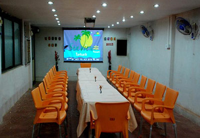

Stay at the Best Hotel In Tarkarli

Sea view Beach Resort mainly promotes the tourism in Tarkarli which is populated by people the whole year It is set up Kharade Family, who currently resides in Mumbai, is a well respected figure in Mumbai and Achara and if you are lucky you can meet them at the resort itself.The guests visiting the resort enjoy the stay at the resort as it is one of the budget reosrts in Tarkarli. Sea view Beach Resort is situated in a four acre plot of land, in a huge coconut plantation near Tarkarli Beach It consists of 16 spacious rooms with 16 AC and 4 Non-AC rooms having attached bathrooms. Sea view Resort has 50 coconut trees which provides a ground for kids activities, open air dining etc.
A group of upto 50 people can be accommodated
with all the facilities. The rooms are 16'x 12' with two fans and A/c, where 6 to 8 people can live with extra beds. Some professional clients have started using Sea view Resort for holding their conferences in the Coconut Tree Grove. A Ready made platform with desired decoration, lighting, is available.Delicious offerings from the kitchen make your enjoyable stay in this resort The resort is managed by the family itself trained employees who put in extra efforts to make their guests comfortable. Kharade family stays very close to the property and are available for any needs.Sea View Resort has, in a short time-span, become one of the most popular hotels in Tarkarli.
What We Offer
Sea View Resort offers accommodation in two different buildings, one with a simple view and another with a garden view, built with care to offer all the basic amenities to ensure a pleasurable stay to its guests during their stay in Tarkarli. Tarkarli resort aslo offers S.C.U.B.A diving which is now a major attraction of Tarkarli apart from its white sand beaches.
Amenities at Sea View Resort
✓Queen Sized Beds
✓LED TV
✓Split AC
✓Attached Toilet & Bath
✓Running Hot Water
✓Towels & Soap
✓Cupboard
✓Generator Back-Up
✓Restaurant & Room Service
✓Intercom & Garden WiFi
✓Spacious Car Parking
✓Doctor on call
Our Room Photos
Room 1
Room 2
Restaurant
